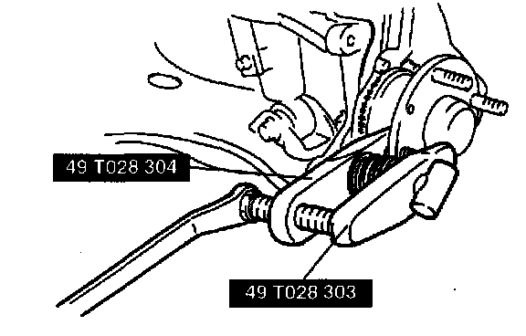

Front
WHEEL BEARING PLAY
1. Remove the brake caliper component and disc plate.
2. Position a dial indicator against the wheel hub. Push and pull the wheel hub by hand in the axial direction and measure the wheel bearing play.
3. If the bearing play exceeds the specification, inspect and adjust the locknut torque or replace the wheel bearing as necessary.
Maximum wheel bearing play 0.05 mm (0.002 inch)